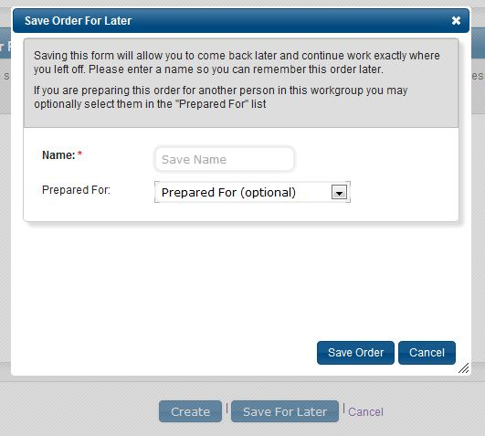
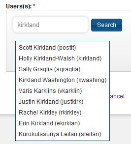
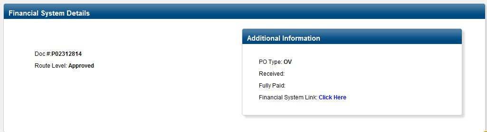
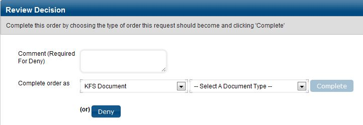
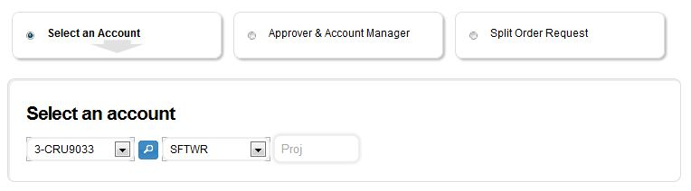
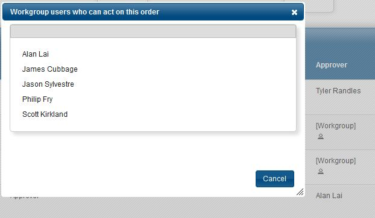
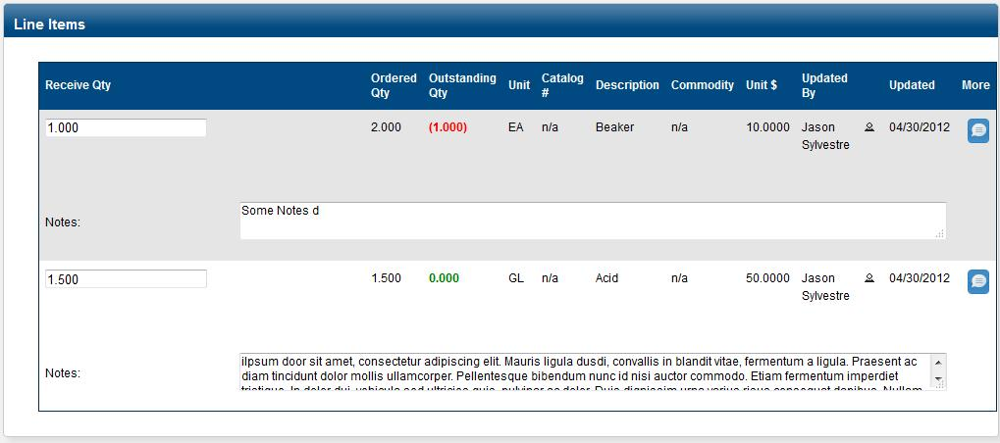

New Features and Fixes since Beta1
Beta1 of PrePurchasing was released on April 1st, 2012. Our Beta users have provided great feedback and we have been hard at work adding new feautres and fixing bugs.
A partial list of some of the more important/significant/most requested modifications follows:
*Save for later
While creating new orders you can now "Save For Later" your current progress so you can come back at any time and complete the order. You can even optionally route your unsubmitted order to another person if you want them to submit it (for example, your computer person might input all technical info if you are purchasing a computer).
*Search for users by Kerb, Email, or Name
When looking up users, you can now just search by name if you don't know the user's kerberosID. However, please verify the kerbID is correct or search by email if you know that to ensure you aren't selecting a similarly named doppelganger.
*Searchbox Visibility
You can now search inside your orders instantly from any page with the new persistent searchbox located in the upper-right corner. Take that Google.
*Financial System Order Details
If you view an order that has been submitted to the campus finanical system we will now automatically load relevant details about the current status of that order. What will you do with all that free time?
*Financial System Integration
Putting order requests into the campus financial system (DaFIS) can be done with the click of a button. Simply selecting a "KFS Document" and the type (DPO or PR), all of the relavent information from the request is automatically uploaded to DaFIS and a saved document will be waiting for you in your inbox.
*Order Details Simplification
It is now easier to navigate the options for providing account routing information. A simple horizontal set of buttons presents your options, with only the currently selected one visible at any time.
*Discover Users In A Workgroup
When you are looking through the order history, you can now peer into any [Workgroup] designation to see who currently has rights (Approver/Purchaser/etc) to make that action for the associated workgroup. No more finger's crossed guessing.
*Received Packages
When you are receiving items, you may enter a quantity and or comments about that item. If you want to see everyone who has updated the item’s receiving values, you may click on the person icon next to the name.
*Administrative Workgroups
Administrative workgroups allow simple management of multiple workgroups within an organization without the need for individually adding users into each workgroup. These workgroups are purely for rights to approve/edit/view order requests and requests are accessed through an administrative screen. Shared Or Cluster workgroups takes this idea one step forward, by integrating these permissions with a user’s everyday tasks. Orders displayed from a Shared Or Cluster workgroup will appear in the user’s screens (ex. Landing page) as if they were assigned directly to the workgroup and will also receive emails when requests arrive.
*Reviewer Role
The Reviewer role has been added to the standard set of roles for workgroups. Reviewer users in this role "read access" to all orders within the workgroup, allowing these users to view order requests, make comments, upload documents and receive items.
*Updated Pdf Printout
The printout option has been updated to include pertinent information (line items, accounting) and remove extraneous information (tracking and history). The purpose of this printout is to provide the necessary pieces of information for purchasers to execute the order request.
Click here for SampleMisc
There were many other significant changes made since the April 1st Beta. You can view our more than 40 completed tickets for a comprehensive overview. A few highlights:
- Shipping Address now shows "Name" and partial address for easier selection
- Additional Order completion options like "Campus Services" and "MyTravel"
- Commodity Code now shows Id and description during lookup
- Non-KFS Vendors can now be created without addresses (example: web-only vendor)